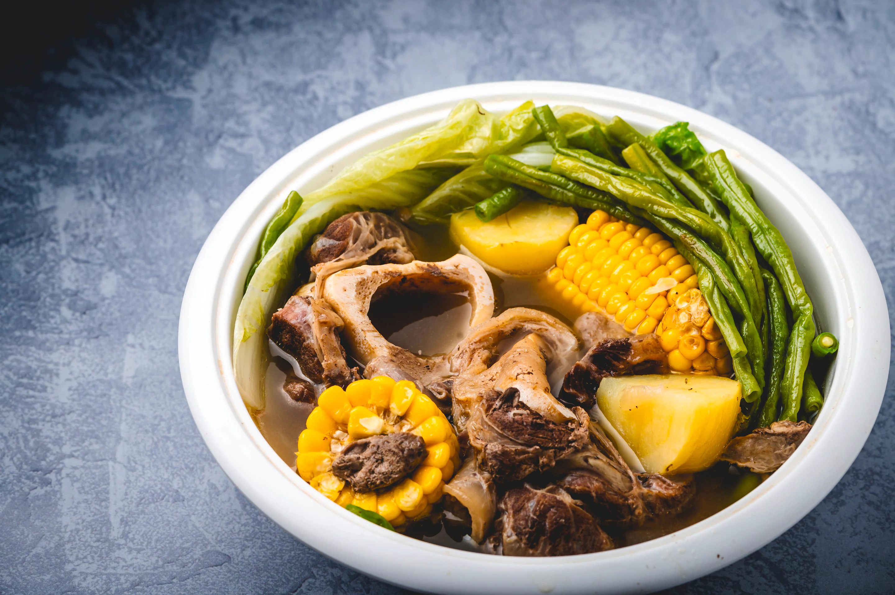

Team Pogi
BULALO (FILIPINO BEEF MARROW STEW)

Still clinging to the last vestiges of spring and the unusually cool weather we’ve been having, I wanted to break out my pressure cooker for one last hurrah before summer fully sets in. This dish comes from a country where the average temperature rarely falls below 80 degrees, making Bulalo a filling stew that’s deceptively light. Perfect, even in warmer weather.
Native to the Southern Luzon region of the Philippines, Bulalo is a light colored soup that’s made rich by cooking beef shanks and beef marrow bones for hours, until much of the collagen and fat has melted into the clear broth. The seasonings vary from chef to chef with some using only salt and black pepper while other variations call for patis, bay leaves or even garlic. But at its core, Bulalo a simple cattleman’s stew, best made in a large cauldron with whatever veggies are growing near by.
In that respect, it’s actually quite similar to the Mexican beef stew, Caldo de Res, which is not entirely surprising given the 250 years of trade that occurred between the two countries while under Spanish rule.